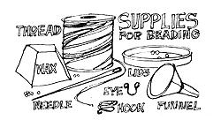
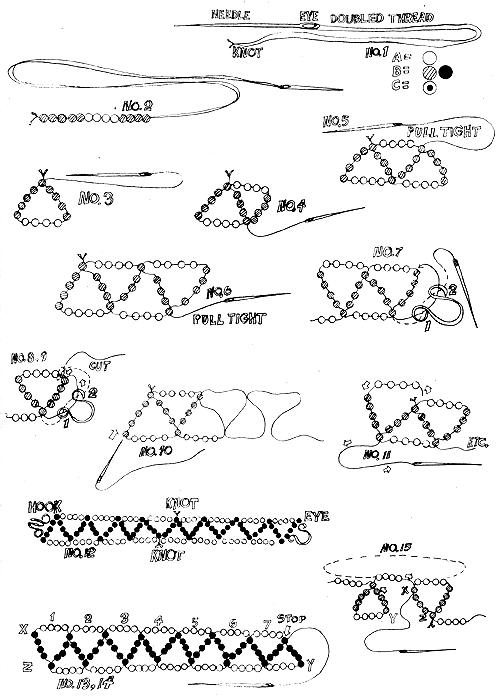
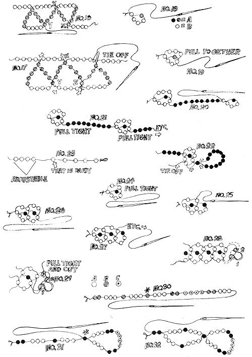
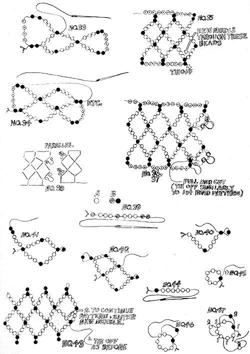
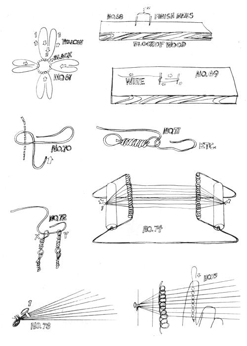

Joe Segan says that his life has been enriched, beautiful people flock to his door and he picks up a nifty $500 a
year in his spare time since he took up
Last year-while on a Baha'i pilgrimage in Haifa, Israel - I discovered the art of stringing beads and I have since used my spare time and nimble fingers to turn a profit approaching $500. I'd now like to pass on what I've learned about this skill because I know that beading is inexpensive, enjoyable and profitable (if you have the spare time, you can turn an investment of $25 into $1000 in less than six months). And besides . . . if I can turn others on to stringing beads, maybe I won't look like such a weirdo.
By the way, beading offers more than full or spare-time cash. It adds a personal touch to gifts and the work leaves your mind free for meditation. In some cases, of course, the disadvantages may outweigh the advantages: the craft gives some folks backaches and eyestrain. In any case, just because I bead and make it pay doesn't necessarily mean that you can too. To be successful with this craft you must be very patient, possess some degree of manual dexterity, not suffer from an acute case of arthritis or have vision that's too poor for prolonged close work. With that somber note out of the way, let's begin.
(A) NEEDLES. Your needles must have large enough eyes if you hope to work efficiently. I use size 16 beading needles (14's are smaller, I believe, and 18's larger) which I buy from Tandy Leather Company. I don't work for Tandy's but I find that they have most of the supplies a bead stringer needs and their needles range in price from 6 for 13 cents to 4 for 29 cents, depending on size. If you don't have a local Tandy's, write to the company's national headquarters in Fort Worth, Texas.
(B) THREAD. The thinnest beading thread is No. 60, the thickest around 30. I prefer the No. 30 because the higher numbers unravel too quickly and I don't believe in selling shoddy merchandise. Tandy handles C-30 mercerized thread in 500-yard spools for about $1.25.
(C) BEADS. Beads can cost from 40 cents for one-half ounce in the 5 & 10 stores to $,2.00-$2.50 a pound at Tandy's. Tandy offers ten assorted colors and, if you buy 10 pounds at once, the company discounts the beads even further. With ten pounds, you can bead for the next year and never worry about supplies. I suggest buying some of the more expensive and prettier beads (including the striped and speckled ones) to mix tastefully with the less expensive and plainer beads. What I mean is, don't use too many of the gaudy ones or your finished product will look like dimestore junk. On the other hand, don't concentrate - for economy's sake - on nothing but plain beads for that also detracts from the beauty of your handiwork. And don't ever buy a bag of mixed beads. Such "bargains" never are. If you're clever, though, you can use just about anything for beading. More on that later . . .
(D) BEESWAX. It's not absolutely necessary that you wax the thread you use, but if you do, you'll find that it won't tangle or unravel and your final product will be much stronger. This wax is available at hardware stores, Tandy's or from the local beekeeper. One or two ounces will last a long, long time.
(E) BOTTLES. (To hold the beads, of course!) Clear glass jars work fine and are available everywhere. It might be campy to use Coke or Pepsi bottles.
(F) LIDS. Your beading will be much more efficient if you pour some of each color and design you're using at any one time into a separate flat lid 2-3 inches wide and no more than 1/2-inch high. These mini-trays are available from your nearest trashcan or, like the bottles above, from your mother's jar collection.
(G) FUNNEL. Another indispensable tool for efficient beading. Once you've finished stringing a color combination, you have to put all those little devils back into their bottles . . . and, if you've picked up as many spilled beads as I have, you'll know what a godsend a funnel is. Get one which tapers down to a small opening of a bit less than half an inch in diameter. It'll cost you 15 to 25 cents in the five and ten.
(H) HOOK AND EYE CLASPS. The ones about 1/4-inch wide at the attaching point come 15-30 in a pack costing approximately 30 cents at most notions counters. They can be used for hanging your finished masterpieces from the wearer's wrist, neck or nose.
(I) LOOM. This is an inefficient tool, wastes time and-no matter what I try when I use one-produces a product that stares at me, pleading for a "made in Taiwan" label. Nevertheless, you may have better luck with one so I'll include a discussion of the loom and its use.
(J) WIRE. Although not a necessity, wire can be used to make beaded flowers and rings. Sizes 18 to 30 (large to small) are best. Bead shops tend to overprice this ingredient so pick yours up at a radio store.
(K) TELEPHONE WIRE. When Bell Tell reroutes service it sometimes throws away lengths of grey conductor about one inch in diameter. Inside this lead are 100 paired and very colorful wires. (Guess what, Martha . . . you can get 'em for free!) At one time I made necklaces from these throwaways. More about that later.
(L) LIGHTING. The importance of proper artificial lighting cannot be stressed enough. Incandescent bulbs are best for beading. I prefer two lamps-one 100-150 watt bulb, six to eight feet away on my right or left and a 6075 watter one to three feet away on the opposite side-so that I'm never working with harsh shadows. The lamps should be shaded, preferably with light-colored shades. Fluorescent, colored or high-intensity bulbs are bummers. If you work in sunlight, position yourself so that El Sol is on your left or right. When he's back of you, you get shadows . . . glare if he's in front. If your eyes go bad, hurt or suffer from other assorted nasties when you bead, check your lighting against my recommendations.
(M) PROPER WORKING DISTANCE AND SURFACE. A good working area is just as important as the aforementioned lighting. Try my method (I haven't patented it, yet) for figuring out the ideal height of your working surface: If you can place your elbow on the workbench and the tips of your outstretched fingers are even with the top of your head (sit up straight in a hard-backed chair that provides firm support), your working distance is good. If the beads bounce all over the place, put a large blotter or sheet of cardboard under your tools.
Ah, yes. The actual beading. First, grab a spool in one hand, the end of the thread in the other and pull off a double armslength of the filament. Cut the strand, thread the needle and double or triple-knot the loose ends of the cord together. Starting at the knotted end, pull the doubled thread through the wax a few times but don't wax the needle. It'll get tacky or bend or both.
Now pick two colors of beads that you like and pour them into lids. Holding the needle between the thumb and index finger, make arcing motions into the tiny trays to catch some of the little blighters and start stringing them onto your knotted thread (Fig. 1). A simple pattern to start with is five beads of color B (Note: be sure your B's have holes large enough to be strung through twice), four of color A, and four more of B (Fig. 2). Then push the needle back through the first B and pull the thread tight (Fig. 3). Four more A's and four more B's are next . . . then push the needle back through the first of the second group of four B's and pull the cord tight (Fig. 4).
Again add four A's and four B's and push the needle back through the first of the third bunch of B's and pull the filament tight (Fig. 5). Thread another four A's and four B's and run the needle back through the first of the fourth series of B's and snug up the string (Fig. 6). Continue the pattern until you're only four to five inches from the end of the thread, then finish the piece off by following this wrap-up sequence very carefully:
Pick up an eye and run the needle down through hole one, up through hole two and around again through the last five B's that line up in a row (Fig. 7). Now run the thread up through hole one, down through hole two, tie it as illustrated in Fig. 8-9 and cut off the excess. Your piece is now one-half finished. Continue with a new thread as shown in Figs. 10 and 11 and finish the other end of the item with a hook.
The completed product should look like Fig. 12 and the design is popularly used for headbands and chokers. I ask $1.25 to $1.50 each and I'm fast enough to make two an hour (that's not very fast, but see how swift you are . . . if your first one doesn't look too good, keep on trying).
A variation of the same pattern can be used for a ring which sells remarkably well. I can make (nimble, nimble, nimble) eight to ten of these an hour and they fetch from $3.00 to $6.00 a dozen.
Start exactly as you started the other pattern and make seven to eleven loops (Fig. 13). Stop exactly in the position shown in Fig. 14, string four A's and push the needle down through bead X, toward Y (Fig. 15). Next thread 3 B's and push the needle through Y (Fig. 16). Add a final four A's, run the thread through Z and knot it. Your ring (Fig. 17) is finished.
When you make a dozen of these rings for a shop, include a few finished pieces with seven, some with nine, others with eleven and still others with even more loops. Shops love two things in handmade stuff: adjustables and size variations. These rings, on a cash/time dividend basis, are some of my best sellers.
Another good item for me (they reap 50 cents to 75 cents each and I can make five an hour) is the daisy chain. Start by threading your needle with a waxed strand a little shorter than arm's length. String four B's (again, make sure the holes in the B's are large enough to take a double threading) and one A. Then push the needle back through the first B (Fig. 18), string three more B's and push the needle back through the B bead shown in Fig. 19. Pull tight! and you've completed one daisy. If yours is a mess, you probably just didn't pull the thread tight enough.
Now string as many A's as you think prudent, add four B's and one A and push the needle back through the first of the new series of B's to start another daisy (Fig. 20). Again add three more B's and thread the strand back through the B bead shown in Fig. 21. Pull tight and continue on until you've nearly finished the thread. End the piece by making a circle of nine to 12 A's, push the needle back through the first of them, exit that bead in the opposite way from which you first entered it, run the thread through a B and tie it off. If you're confused, see Fig. 22. Note: too many beads in the loop that ends this item causes slippage and too few beads make it hard to put on or take off. Adjust the length of the chains by the way in which you space the daisies (Fig. 23).
It's possible to make six, seven or eight bead daisies. For six, string four B's, one A, needle back through the first B, add two B's and so forth. Sevens are made as already illustrated and-for eight-string five B's, one A, needle back through the first B, add three more B's, etc.
The next pattern is a variant of the above and is very popular with the Hong Kong junk dealers. The item is worth about $1.25 as a choker, it takes me an hour and a half to do one and I hate them.
String four B's and an A on a waxed and knotted thread and push the needle back through the first B. String two more B's and run the needle back through the B bead shown in Fig. 24. Then thread two B's, one A and push the needle through the bead shown in Fig. 25. Again add two B's, push the needle through the bead shown in Fig. 26, add two more B's and an A and thread the needle back through the bead shown in Fig. 27. To end the pattern with a hook and eye, run the needle down through hole one and up through hole two (Fig. 28), around through the last two B beads, up through hole one, and down through hole two. Tie off as desired (Fig. 29).
That was the six bead variant. To do the eight bead version, use the same procedure but start with five B's and one A, loop the thread back through, add three B's, loop back and add five B's and an A, loop back, add three B's and so on.
The next design is my personal favorite. It can be widely varied, it sells for a lot and-because super-wide chokers are "In"-it can always be bartered for other things of even greater value. The going price of this little number in my area is about $30 a dozen.
String two B's, three A's, one B, three A's, one B, three A's, two B's, four C's, two B's and three A's as shown in Fig. 30. Push the needle through the fourth B (which is starred in Fig. 31) and thread three A's, one B and three A's. Push the needle back through the first two B's as shown in Fig. 32. Next string up four C's, two B's and three A's and run the needle back through the bead shown in Fig. 33. Add three A's, one B and three A's and guide the needle back through the B's shown in Fig. 34. Continue the pattern and tie off the finished piece as shown in Fig. 35. Add to the design by picking it up from the last two double B's as also indicated in Fig. 35. When you're about six inches from the end of the second thread, finish the piece by attaching and tying off two eyes as shown in Fig. 36-37. Attach corresponding hooks on the other end (Fig. 38) so that the diamond patterns fit together.
I'm going to become sparser with my text and illustrations as we go on because, if you've come this far, you should be able to improvise. I figure that if I can understand it from here on out, you can too.
A variant of the last design that fetches about $2.00-$2.50 per piece for one and a half hours of my time begins with one B, three A's, one B, three A's and two B's (Fig. 39). Pull the needle back through the third B (Fig. 40) and string three A's, one B and three A's before running the needle back through the first B. Then string three A's and two B's (Fig. 41). Loop the needle back through the sixth B and add three A's, one B and three more A's (Fig. 42). Continue the pattern and tie it off at the end or finish with a hook and eye.
The design coming up is three dimensional and the illustrations may be hard to understand. In essence, the pattern is a beaded cord and may be started with any odd number larger than five. Don't go overboard, though. Anything over 15 is unmanageable.
Start the "seven" variation by threading one B and six A's (Fig. 44). Pull the needle through B again the same way it went through before, add another B and push the needle through the second A for the second time (Fig. 46). Pull tight! Always remember to keep that thread tight as you work.
The pattern you want to establish is the stringing of one A (or B), the skipping of the next bead and the bringing of the thread through the following bead (Fig. 47). Further explanations will only confuse the most analytic of minds and I suggest you follow the illustrations for this one as closely as possible. The numbers in Fig. 48 indicate how many beads are on top of each other. To tie off, try to follow the thread in Fig. 49.
I've never done a medallion but they're quite simple. Use thick, closely woven cloth cut round a lid for the circle and mount it on a slightly larger piece of leather after the beadwork is attached. Since I don't make medallions, I don't know what they sell for. I can only suggest, if you try your hand on these items, that you don't make them look like a machine made them.
Start a medallion by pulling your needle through the middle of the cloth and threading on a B (Fig. 50). Push the needle back through the cloth near its middle (Fig. 51). Bring the needle again to the front of the cloth a bit further from the middle and string 8 to 12 A's (Fig. 52). Push the needle back through the cloth very close to where you just came through to the front. Then anchor the string of beads on the opposite side of the medallion's face by running the needle out the face, over the thread holding the beads and back through the face again as shown in Fig. 53.
Increase both the number of beads and tie-downs in the next ring. If you started with eight beads in the second row, add an additional eight in each succeeding row as you move outward. If you began with nine, add another nine to each ring, and so forth. You'll note a total of three tie-downs in the third row as shown in Fig. 54 and ring four should have seven of these anchors in addition to the entry and exit points.
Medallion design is a matter of choice. Just draw what you want the final product to look like and bead it outward from the middle. When you've finished, paste the circle of cloth to the leather with rubber cement. Edge the medallion as shown in Fig. 55 by following the dotted lines for in and the solid lines for out . . . or you can fringe the piece as shown in Fig. 56. Fringing can be done at the same time that you edge the decoration and the dotted lines in Fig. 56 indicate the best area for this treatment.
Perhaps you've seen those braided belts which have been mysteriously woven without being cut at either end? It's actually quite easy when done with beads and Fig. 57 indicates how the strands are run before braiding.
Tie the thread to hole number one, string about 13 to 16 inches of color C beads, tie and anchor the thread through hole 2, string the same length of color B beads, tie and anchor the thread through hole 3, string a length of A's and tie off the thread at hole 4 (Fig. 58).
Now braid the belt by flopping the C's to the middle, the A's to the middle and-finally-the B's to the middle and flipping the eye through the space marked X (Fig. 59). Braid again by crossing just three threads as you did before, hold the braided part in your left hand, undo the remaining mess with your right and flip the eye through X again. Continue crossing threads to the middle, undoing the mess and flipping through until the piece is tight enough or you give up. (We found, by experimenting, that we could get even better effects by crossing C's, A's and B's to the middle, flipping the eye through point Y, then crossing A's, C's and B's to the middle and again flipping the eye through Y, etc. Obviously, there's a multitude of combinations possible with this one. - Ed.) These items can be done abnormally fast and fetch about $1.25 each.
If you've grown tired of working with teensy-weensy beads and needles with itsy-bitsy eyes, we'll give you a half-rest now by threading the beads on 28 to 34 gauge wire to make a ring worth 35 to 55 cents.
Cut your wire about 18 inches long and thread one A, two B's and one A onto it. Make sure that ends one and two are held even (Fig. 60), string another A, two B's and an A onto end two and run end one the other way through this second series of beads (Fig. 61). Make sure that ends one and two are even and continue on as shown in Fig. 62.
Widen the ring at any point you choose by adding one bead of your choice to each succeeding row. You can even let a larger bead intersect two rows of the regular ones (Fig. 63). Tie off by pushing wire X through X-Y, X-Y and by pushing wire Y through Y-X, Y-X (Fig. 64). Cut as desired.
Wire-beaded flowers are not something I play with but, since this is meant to be a set of unprejudiced instructions, here it is. Use green (or whatever color you prefer) quarter-inch beads threaded on stiff 16 or 20 gauge wire for the stems. Tie off each stem by reinserting the wire into four or five beads and twisting (Fig. 65). You'll place the flowers of your invention upon Fig. 65's bead X.
Don't worry if Fig. 66 looks like hieroglyphics. The curled lines indicate the runs of wire which are each covered with beads. Wire end one goes through bead X and continues out the other side and the flower should eventually look like part of a dandelion if you bend the wires and fold them down. Attach another bead X on top of the first. If you desire, affix different lengths of yellow beaded strands as in detail B of Fig. 66 and the finished flower should look like detail C of the same illustration.
For daisies, your big X had better be black. String one row of yellow, continue yellow through row two without a break, intersect a black bead to anchor the work, string row three with yellow beads and push the wire down through row two again (Fig. 67). Presto, you have one petal! Make the others the same way.
Bead flowers sell for one to two dollars each and, with some 250,000 species of flowering plants in the world, you'll have plenty of room for trying your own thing.
Earlier, I advised against buying mixed beads. Such assortments usually contain factory rejects with holes that are too small or other nasties, and are seldom a bargain. If you're short of money, though, you can use nearly anything for your beading. A drill and driftwood do wonders and shells and an icepick do the same. Real bullet shells are campy and sell quite well or, better yet, why not try seeds? Pumpkin and watermelon are best and can be pierced directly with a needle when soggy. Most other seeds have to be drilled. Throw in a nut, a link from a bicycle chain, a guitar pick or even a shellacked aspirin (if it suits you) on an otherwise straight string. Be clever. Keep ahead of your competitors (if you have any). Just remember to keep your color combinations tasteful and not gaudy.
Telephone wire is another wild trip. Just one of the many assorted freebies that society throws away by the ton, it come in a grey jacket with fifty pairs of wildly colored, plastic-coated leads inside that can be made into beads with an absolute minimum of effort.
Drive two finishing nails into a block of wood. The nails should be about one inch apart and each should protrude about one inch (Fig. 68). Now take a length of telephone wire 6-7 inches long and bend it as shown in Fig. 69. Grasp the piece of wire with your left thumb and forefinger at the dotted line shown in Fig. 70, pretend you have a clock in your left palm and wind the wire clockwise until either it or you are exhausted.
Place the completed loop in an uncompleted loop (Fig. 71) and wind the second section of wire. To end the series, place one end X and one end Y in the same uncompleted loop before winding it (Fig. 72). Necklaces of about 40 links made this way sell for 50-75 cents each, according to the quality and thickness of the wire, and I can make four to six an hour. Whoopie.
Which brings us to looms. Yes. Looms . . . the fine art of which, in my opinion, is not a fine art at all. To be poetic, I loathe the loom but-just to show that I don't carry a grudge-I will tell you how to use one.
Take some threads (one more than the number of beads wide that you plan your finished piece to be) nearly two feet long and tie one end of the bundle. Separate the strands roughly in half and hook the bunch of threads under nail or tack No. 1 (Fig. 73) on your loom (Fig. 74). Separate the threads so that they're parallel and only one runs through each tooth of the two "combs" . . . and wrap the remaining lengths of the threads around the nail on the loom's second spool.
Now string one less bead than you have threads, raise the string of beads through the threads with your finger (Fig. 75) and run your needle across the top of the threads and through the beads again. That's it. Repeat the process, varying the beads to produce the pattern you want.
The first rule-of course-is to never, never, never try to sell stuff that looks shoddy. "Shoddy" includes work with too many or too few beads in certain spots, mismatched beads (because you ran out of the original color), or super-loose or fraying finished products. Shopkeepers can't sell such garbage and they'll lose respect for you if you attempt to pawn it off on them. Be honest, as they say in the Gentle Revolution, and pay your dues.
Make three or four trial pieces of every item before trying a sales piece. Analyze your mistakes-looseness or incorrect stringing-and give the shakedown work to your friends or scavenge the pieces for beads.
The second rule you should memorize is, "Don't sell to friends". Unless-that is-you enjoy being underpaid, miserable and seeing friends outraged at your prices (which will be only half what shops charge for the same work). After many moons of showing my labors of love to people I know, I gave up. Now less than a dozen friends know about my freaky habit. It's OK to give someone you like an occasional freebie . . . but save your hard bargaining for the businessmen.
It's best, when selling to shops, to have single samples of your wares out and a dozen of each item tucked away in a briefcase, paper sack or satchel. Dozens and half dozens are the most popular quantities and you should have stock ready for a quick sale.
Don't anticipate doing business in poster, candle or record shops. You're probably better off staying completely away from them, in fact. Such outlets usually do not carry handwork and-if you get too many rejections from too many people-you may be tempted to lower your prices to the "giveaway" level. Don't do it. Never allow defeatism to force your prices down. What seems high to some people will be regarded as a bargain by those who recognize what your work is worth.
Low class clothes shops about the size of your rich girlfriend's living room, dark as a mole hole, lit by several campy lights and smelling of nauga-hide (the typical teenybopper hangout) will take your stuff but are usually set up for quick, impersonal sales. The odds are good that your work won't even sell in such places because the patronage is looking for dirt-cheap, hip items . . . the kind that comes from machines and Hong Kong. The best items for these accounts are rings, daisy chokers and telephone wire beads at wholesale prices ranging from 25 to 75 cents per item.
Shops that handle high quality clothes are an entirely different matter. Such stores are vitally interested in enhancing their customers' wardrobes and often carry distinctive and one-of-a-kind jewelry . . . a best bet for your more expensive items.
Straight gift shops (where the normal looking people go) and hip head shops that feature handcrafted merchandise are also naturals for your work . . . as long as you stick with the privately-owned places (it'd be foolish to try to sell Sears or Macy's a dozen of your prizes).
When you approach the straight stores, be neat and polite . . . and you probably won't notice a generation or any other kind of gap at all. Don't hit the head shops on weekends and weeknights when they're the busiest. The best times are Monday through Friday, 12 noon to 4 or 5 in the evening.
Check out each shop by mentally marking down its main items and noting if it carries a line of hand-done work. If the place does feature handicraft at prices which-minus the usual markup-will pay you for your time, you may have a sale.
Speaking of markup, most outlets double the price of the handwork they carry. This means that the labor of love you wholesale to the outlet for $2.50 will carry a retail tag of $5.00 and there's nothing unfair about the practice. Shops have to make up for the unsold stuff that hangs around for ages, utilities, repair bills and all the other hassles that we work-a-day laborers don't have to worry about. If you want the big price for what you produce, you can always open your own place of business.
I indicated the general wholesale price I get for each item I've told you how to make. Remember, though, that some accounts expect a quantity price reduction when buying by the dozen. When that's the case, multiply the individual price of the item in question by 12 and subtract 5 to 10% from the total.
You should also be a little flexible when you set your prices. Keep in mind where you live and where you're selling. If a shop's patronage is made up of millionaires, help them share the wealth . . . but never overprice your wares in the poorer sections of town. It'll all average out. Beading won't allow you to get rich but it should enable you to live somewhat akin to a well-off bum.
By the way, I prefer to deal cash on the barrelhead: I get my money when I deliver the goods. Consignment, that supposedly "get rich" plan, is a dirty word to me. True, when it works, you'll come out with more money than you'd normally get just selling wholesale . . . but some shops have a habit of keeping both the merchandise and the money. If you ever do leave your hand-dones in a store on assignment, get a signed statement of ownership and value. If the shopkeeper won't give you such a receipt, take your wares with you and walk on out the door.
It may seem strange to you that I mention ESP during a discussion of marketing . . . but I will. It doesn't take a mystic to feel the atmosphere of a place and bad vibrations will not loosen the tongue or make sales. If you still feel tense after a few minutes of talking to a shopkeeper, it's probably best that you move on.
When the vibes are good, lines like, "Hello. I string beads and things and wondered if you'd like to look at my stuff" are usually OK for openers and your first few words are very important to the eventual sale. Speak loudly enough so you don't have to repeat yourself and quietly enough to keep your conversation as private as possible. Use any variation of the aforementioned line that suits your situation and feels comfortable.
If the person in charge wants to see your work, show him or her everything you have. Last summer, while in L.A., I talked to a shopkeeper who wasn't interested in the telephone wire necklaces I had but-as I was leaving-I asked if he wanted to see some strung beads. He did . . . and ordered $115 worth.
If the individual looking at your wares tells you something like, "I'd like to buy but we're moving soon", or "the buyer isn't here", or "come back in three days", believe him and make it a point to return, time permitting. If he says no, ask if he wants to see cheaper items that are adjustable.
When the place has class, work from the most expensive to the least and if the shop has little going for it, bring out your bargain basement items first and then work up.
The final NO may spell rejection at that one location but can still lead to other places that want beads. Ask for suggestions and pay close attention when the shopkeeper or sales personnel gives you a tip or lead that might pay off. Generally-even when they can't use or don't want your product-the people at a store will think of you as a fellow businessman and will try to be helpful. The occasional sorehead who tells you to "lower prices", "wear nicer clothes", or "cut your hair" should just be ignored.
These ideas for marketing your beadwork should work just as well on the road as in your own backyard, which opens up the interesting possibility of using beads to finance your travels . . . if you're inclined to ramble. Yes, it can be done. Just work an area until you have orders for $50 or more of your products, hole up long enough to produce the merchandise, collect your money and move on down the road.
One last tip: before embarking on a sales expedition, try praying to your favorite deity (God, Krishna or whatever you sincerely believe in). I do it, it bolsters my confidence and I don't feel as bad when I lose a sale.
|
 |
 |
 |
|
 |
 |
|